Ação / Sobrevivência (11)
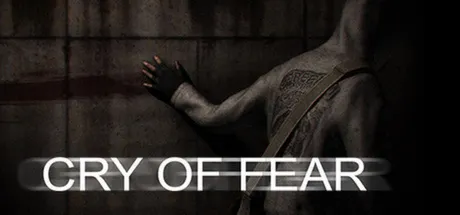
Acordas num beco escuro, esquecido de tudo. Que aconteceu? Esta é a luta que enfrentas: sa...
Ver TraduçãoDead Island (todas as versões)
O jogo que redefiniu o género zombie – totalmente remasterizado. O paraíso torna-se num in...
Ver TraduçãoNão deixes a escuridão levar-te. Don't Starve é um jogo de sobrevivência na selva com ciên...
Ver Tradução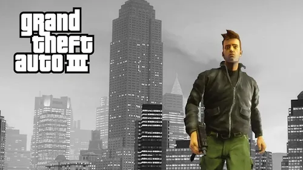
O sucesso aclamado pela crítica Grand Theft Auto III traz para as três dimensões o sombrio...
Ver TraduçãoHá cinco anos atrás, Carl Johnson escapou das pressões da vida em Los Santos, San Andreas....
Ver Tradução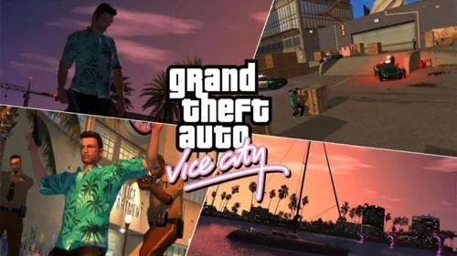
Bem-vindo de volta a Vice City. Bem-vindo de volta aos anos 80. Da década do cabelo compri...
Ver Tradução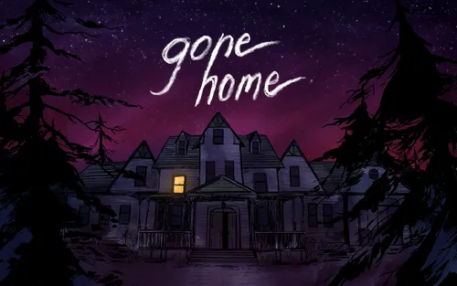
7 de junho de 1995, 1h15 da manhã. Regressas a casa depois de um ano no estrangeiro. Esper...
Ver TraduçãoQuando Harry Potter soube que era um feiticeiro e um bilhete misterioso lhe chegou, ele fo...
Ver TraduçãoAtreves-te a entrar no mundo sombrio de LIMBO? Esta fantástica aventura dá-te o controlo d...
Ver Tradução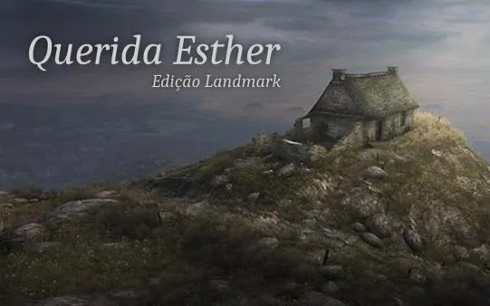
Querida Esther é um jogo em primeira pessoa em que, ao contrário dos jogos habituais, o pr...
Ver TraduçãoEste jogo tem uma regra. E essa regra tem de ser quebrada. Este jogo tem um objetivo. E, a...
Ver TraduçãoMistério (12)

A Pedra de Anamara, desenvolvido por Gabriel Rodríguez, o criador argentino, é um jogo fla...
Ver Tradução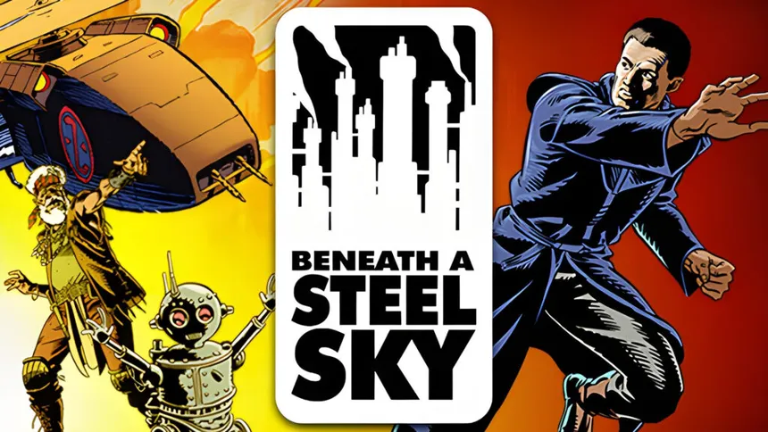
Depois de ser raptado por soldados brutais e de testemunhar o massacre dos seus familiares...
Ver TraduçãoAcordas num beco escuro, esquecido de tudo. Que aconteceu? Esta é a luta que enfrentas: sa...
Ver Tradução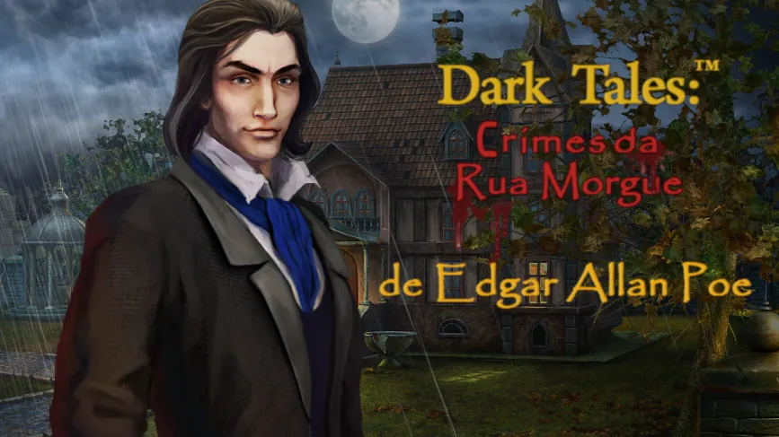
Dupin, um famoso detetive, pede a tua ajuda para resolver um crime horrível. Um assassino...
Ver Tradução
Tanto quanto nos é possível lembrar, temo-nos situado na linha ténue entre o caos e a orde...
Ver Tradução7 de junho de 1995, 1h15 da manhã. Regressas a casa depois de um ano no estrangeiro. Esper...
Ver TraduçãoQuerida Esther é um jogo em primeira pessoa em que, ao contrário dos jogos habituais, o pr...
Ver TraduçãoEste jogo tem uma regra. E essa regra tem de ser quebrada. Este jogo tem um objetivo. E, a...
Ver Tradução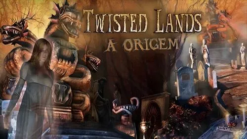
Em Twisted Lands: A Origem, assume o papel de um detetive talentoso que sempre confiou no...
Ver Tradução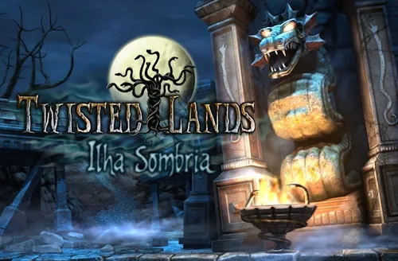
Bem-vindo à Ilha Sombria. Aqui vêem-se praias, mas representam um perigo para quem se apro...
Ver Tradução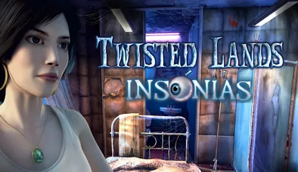
A saga continua na sequela do mais vendido jogo da temporada. Banhado de terror psicológic...
Ver TraduçãoO governo obterá em breve o direito de vender o Castelo de Malgrey, porque nenhum herdeiro...
Ver TraduçãoQuebra-cabeças (17)
A Pedra de Anamara, desenvolvido por Gabriel Rodríguez, o criador argentino, é um jogo fla...
Ver TraduçãoDupin, um famoso detetive, pede a tua ajuda para resolver um crime horrível. Um assassino...
Ver Tradução
Tanto quanto nos é possível lembrar, temo-nos situado na linha ténue entre o caos e a orde...
Ver TraduçãoAcordas um dia com um sonho. Um harém cheio de raparigas demónio. Abres o portal na espera...
Ver Tradução
Se pensas que viste todos os jogos de troca de mosaicos é porque não jogaste Idade do Japã...
Ver TraduçãoAtreves-te a entrar no mundo sombrio de LIMBO? Esta fantástica aventura dá-te o controlo d...
Ver TraduçãoEnquanto intrépido arqueólogo que labora nas encostas de um vulcão adormecido algures no M...
Ver TraduçãoA vida no Pequeno Planeta era tranquila e despreocupada até que ocorreu um grande desastre...
Ver TraduçãoTrine acompanha três personagens ligadas pelo destino e um objecto mágico denominado Trine...
Ver TraduçãoEm Twisted Lands: A Origem, assume o papel de um detetive talentoso que sempre confiou no...
Ver TraduçãoBem-vindo à Ilha Sombria. Aqui vêem-se praias, mas representam um perigo para quem se apro...
Ver TraduçãoA saga continua na sequela do mais vendido jogo da temporada. Banhado de terror psicológic...
Ver TraduçãoO governo obterá em breve o direito de vender o Castelo de Malgrey, porque nenhum herdeiro...
Ver Tradução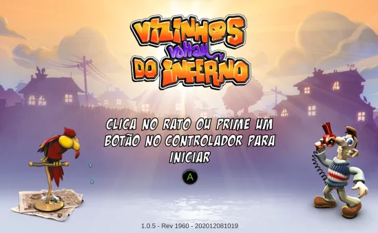
Vizinhos Voltam do Inferno (2020)
Sabias que a palavra alemã "Schadenfreude" define o conceito de encontrar alegria na infel...
Ver Tradução
Vizinhos do Inferno
O teu vizinho do lado é deveras irritante. Está na hora da tua vingança! Cerca-lhe a casa...
Ver Tradução
Vizinhos do Inferno 2
O Sr. Rotweiler precisava de uma pausa para respirar das partidas do Woody, por isso decid...
Ver Tradução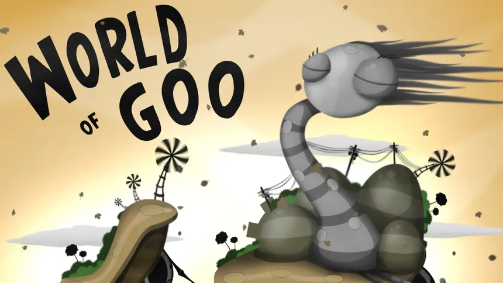
World of Goo é um jogo de quebra-cabeças baseado na física. A grande maioria dos níveis en...
Ver TraduçãoCorrida (5)
Trackmania Turbo oferece-te o mais recente universo da corrida arcada onde tudo se trata d...
Ver TraduçãoBlur (atualizado)
Blur é um jogo de carros de corrida elegante em espaços realistas e 50 carros reais em lut...
Ver TraduçãoExtreme Tux Racer é um jogo de corrida em OpenGL que apresenta Tux, a mascote do Linux. O...
Ver Tradução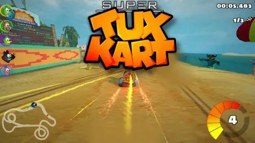
Mais que fazê-lo realista, queremo-lo divertido. Conhece o grande farol ou então traspassa...
Ver TraduçãoTrackmania é o jogo de corridas de carros de maior entretenimento de sempre. Milhões de jo...
Ver TraduçãoEstratégia (5)
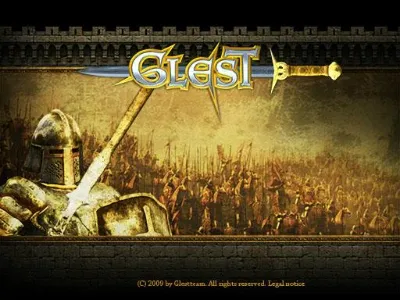
Glest é um gratuito jogo 3D de estratégia em tempo real, no qual controlas os exércitos de...
Ver Tradução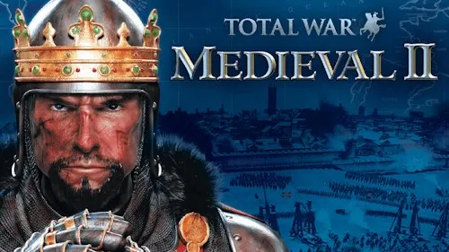
Gerirás o teu império com punho de ferro, tratando de tudo, desde a construção e melhoria...
Ver TraduçãoÉ o ano de 1850: o mundo está a mudar. Uma nova era de produção e transporte em massa come...
Ver TraduçãoÉ o ano de 1850: o mundo está a mudar. Uma nova era de produção e transporte em massa come...
Ver Tradução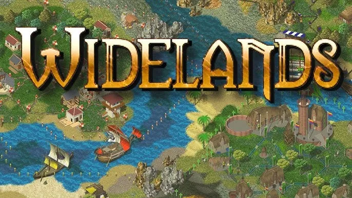
Widelands é um jogo de estratégia em tempo real com focos em economia e construção. Constr...
Ver Tradução